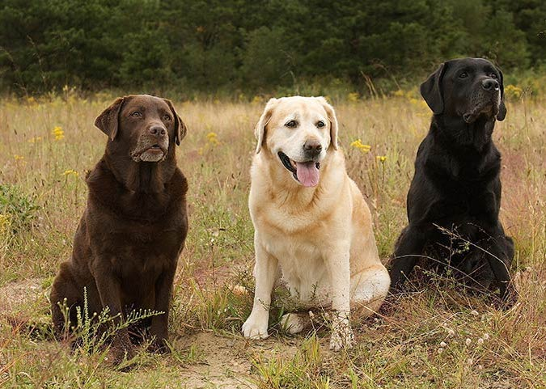

Info
Support
Marketing
Terms Of Use
Privacy Policy
Enter your email...
Subscribe
Get The Latest Dog News!
PupHub
Contact Us
FAQ
Accessibility
Dog Breeds
1 / 3

Generally considered dogkind's finest all-purpose worker, the
German Shepherd Dog is a large, agile, muscular dog of noble character and high
intelligence. Loyal, confident, courageous, and steady, the German Shepherd is
truly a dog lover's delight. German Shepherd Dogs can stand as high as 26 inches
at the shoulder and, when viewed in outline, presents a picture of smooth, graceful
curves rather than angles. The natural gait is a free-and-easy trot, but they can
turn it up a notch or two and reach great speeds. There are many reasons why German
Shepherds stand in the front rank of canine royalty, but experts say their defining
attribute is character: loyalty, courage, confidence, the ability to learn commands
for many tasks, and the willingness to put their life on the line in defense of loved
ones. German Shepherds will be gentle family pets and steadfast guardians, but, the
breed standard says, there's a 'certain aloofness that does not lend itself to immediate
and indiscriminate friendships.
2 / 3
The Golden Retriever, an exuberant Scottish gundog of great beauty, stands
among America's most popular dog breeds. They are serious workers at hunting and field work,
as guides for the blind, and in search-and-rescue, enjoy obedience and other competitive events,
and have an endearing love of life when not at work. The Golden Retriever is a sturdy, muscular
dog of medium size, famous for the dense, lustrous coat of gold that gives the breed its name. The
broad head, with its friendly and intelligent eyes, short ears, and straight muzzle, is a breed hallmark.
In motion, Goldens move with a smooth, powerful gait, and the feathery tail is carried, as breed fanciers
say, with a 'merry action.' The most complete records of the development of the Golden Retriever are included
in the record books that were kept from 1835 until about 1890 by the gamekeepers at the Guisachan (pronounced
Gooeesicun) estate of Lord Tweedmouth at Inverness-Shire, Scotland. These records were released to public notice
in Country Life in 1952, when Lord Tweedmouth's great-nephew, the sixth Earl of Ilchester, historian and sportsman,
published material that had been left by his ancestor. They provided factual confirmation to the stories that had
been handed down through generations. Goldens are outgoing, trustworthy, and eager-to-please family dogs, and relatively
easy to train. They take a joyous and playful approach to life and maintain this puppyish behavior into adulthood. These
energetic, powerful gundogs enjoy outdoor play. For a breed built to retrieve waterfowl for hours on end, swimming and
fetching are natural pastimes.
3 / 3

The sweet-faced, lovable Labrador Retriever is America's most popular
dog breed. Labs are friendly, outgoing, and high-spirited companions who have more than
enough affection to go around for a family looking for a medium-to-large dog. The sturdy,
well-balanced Labrador Retriever can, depending on the sex, stand from 21.5 to 24.5 inches
at the shoulder and weigh between 55 to 80 pounds. The dense, hard coat comes in yellow, black,
and a luscious chocolate. The head is wide, the eyes glimmer with kindliness, and the thick,
tapering 'otter tail' seems to be forever signaling the breed's innate eagerness. Labs are famously
friendly. They are companionable housemates who bond with the whole family, and they socialize well
with neighbor dogs and humans alike. But don't mistake his easygoing personality for low energy:
The Lab is an enthusiastic athlete that requires lots of exercise, like swimming and marathon games
of fetch, to keep physically and mentally fit.